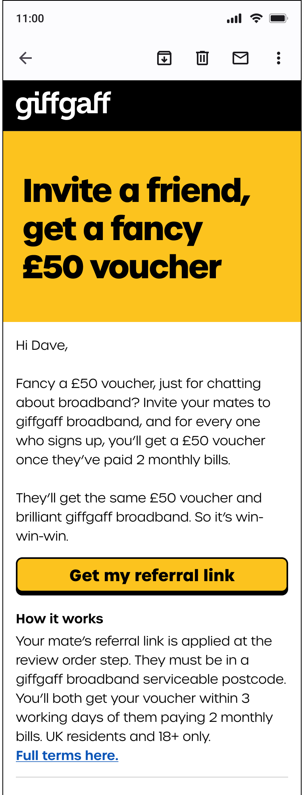
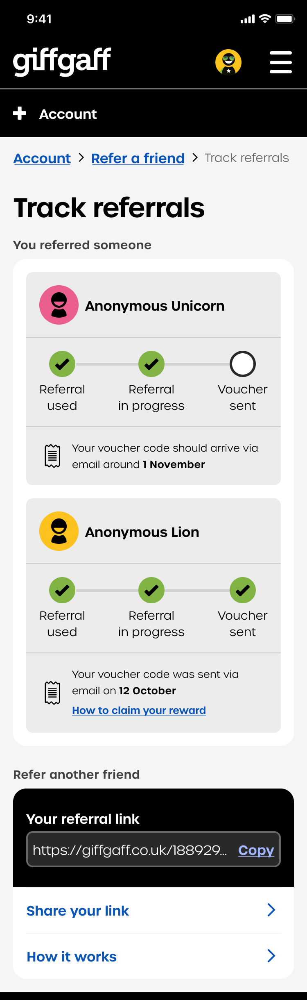

Case study 5 of 7 · Referrals
Referrals: a reward people could picture
I wrote the comms for giffgaff's first broadband referral programme, then used what real referrers told us to redesign the content for the second version. The problems were all communication problems, which made them mine to sort.
- Role
- Content designer, wrote the content brief and every message
- With
- Product management, product design, CRM, legal
- When
- Version one October to November 2025, member research June to July 2026, Referrals 2.0 July to September 2026
- Methods
- Member survey, desk research, content brief with testable hypotheses, Maze prototype study (n=10)
- 3.9→4.9out of 7 for "the wait feels about right", before and after the trackerThe wait didn't change. The tracker added dates
- 10 of 10understood what they'd get and what their friend would getMaze study, September 2026. The gate I set was 8 of 10.
- 8 of 10could say when their reward was dueUp from "referral in progress" and no date at all
Version one
The first programme launched in late 2025 for existing members. Share a code, your friend enters it at checkout, and once they've paid a few bills you get a reward. I wrote the full set of messages: the invite email and text, "someone used your code", the reminder the month before, "your reward is ready", the inserts in the order confirmation and "you're live" emails, and the help article.
Part way through, the reward changed from account credit to a gift voucher. Every mention of "credit" across 8 messages became "reward", and the voucher had to be explained without making it sound like a catch.
What referrers told us
In a survey of real referrers and their friends in summer 2026, half the referrers said the most effort in the whole thing was waiting for the reward. It wasn't the sharing or the sign-up. It was the wait, because nothing told them how long it'd be or what was going on.
The second finding was about the reward itself. People had pictured cash or money off their next bill, and a voucher caught them out.
"It was said to be a cash bonus instead of a voucher."
Referrer, member survey, July 2026
"I expected a discount on the following month, instead I got a voucher."
Referee, member survey, July 2026
I wrote the content design brief for Referrals 2.0 around those 2 facts. Name the reward as what it is, every time, in the same words. Show the wait as milestones with dates. And set a test gate before anything ships: at least 8 in 10 people have to be able to explain the reward mechanic back to us.
What changed
One action, one button
Referrals 2.0 opened the programme up so anyone can refer anyone, with or without a giffgaff account. That meant the first screen had to work for people about to log in and people about to create an account. So the button says what you get.
Referral page, primary button
Get my link
A wait with dates on it
The tracker replaced "referral in progress" with the stages a referral actually goes through and the date each one's expected. In testing, people rated how the wait felt before seeing the tracker and again after. Same wait, but "feels about right" went from 3.9 to 4.9 out of 7, and 8 of 10 could then say when their reward was due.
"The steps for referral are very clear… so you know exactly how it works."
Participant, Maze study, September 2026
The reward, in one consistent phrase
10 of 10 understood what they'd get and what their friend would get, and 8 of 10 knew it'd arrive after their friend's second bill. 7 of 10 understood it was a code you swap for a gift card. The one thing that still didn't land was the 6-month window to make the swap: 3 of 10. That's the next thing to fix, and it's logged in the brief.
The comms plan
6 live templates went into the plan. 4 new messages came out of it (a link was used, an order was placed, payments to go, your voucher) and 3 existing ones got fixed. The referrer and referee voucher emails were written to tight character limits.
"In progress" isn't a status. If people are waiting, give them a date, even a rough one.
Invitation email

Track referrals

Screens are from the Referrals 2.0 research prototype, with placeholder names.